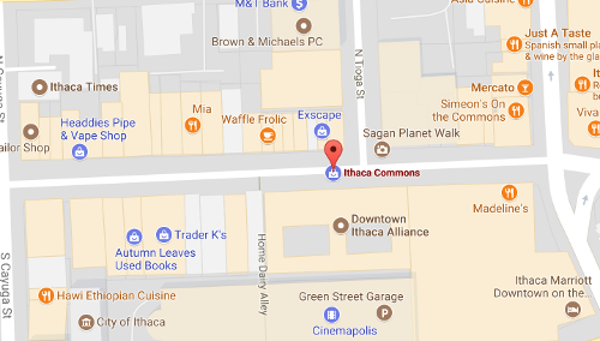
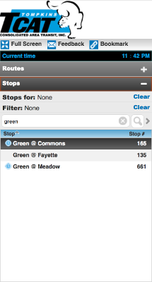

About
The Downtown Ithaca Alliance is pleased to announce the 35th Annual Apple Harvest Festival Presented by Tompkins Trust Company. The 2017 Apple Harvest Festival hosts plenty of apples, local produce, fresh baked goods, family entertainment at every turn, games, rides, prizes and live performances on two stages. Apple Harvest Festival is a great introduction to the rich farm and artist community of Ithaca. First time visitors can witness a variety of wonderful local entertainment while also visiting the historical outdoor pedestrian shopping mall, The Ithaca Commons.
Dates
September 29 (Friday, 12 - 6pm)
September 30 (Saturday, 10am - 6pm)
October 1 (Sunday, 10am - 6pm)
Directions & Map
Ithaca Commons Area in Downtown Ithaca, Ithaca, New York 14850
1) Via Car
Image from: https://www.google.com/maps/place/Ithaca+Commons/@42.4395929,-76.4991817,17z/data=!3m1!4b1!4m5!3m4!1s0x89d0819c8632d9e5:0x7e9b07ab2aa65eb6!8m2!3d42.439589!4d-76.496993
Google Map2) Via TCAT Bus
Set STOP to "Green @Commons" in TCAT Bus Tracker page
Image from: https://realtimetcatbus.availtec.com/InfoPoint/